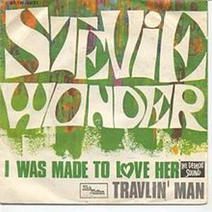
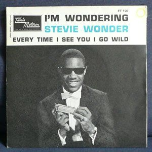

I Was Made To Love Her es un álbum en el cual el equipo de la Motown trabajó duro para conseguir superar el mayor éxito hasta el momento de Stevie Wonder,"Fingertips". Versiones de grandes vocalistas de la música negra de la época como "Respect" de Otis Redding, "My Girl" de los Temptations, "Please,Please, Please" de James Brown, "Send Me Some Lovin'" de Little Richard o "I Pity The Fool" de Ray Charles.
Pero de nuevo el gran talento del ya no tan pequeño Stevie, brilla con temas más propios como "I Was Made To Love Her", una de las más importantes composiciones de finales de los años 60 por su combinación vocal y musical.
 